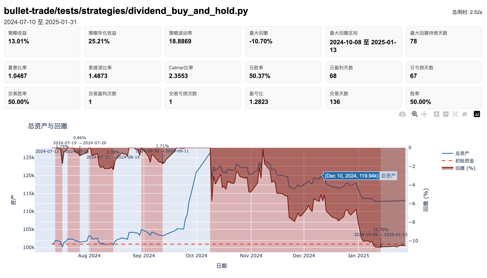

回测引擎¶
如何在本地快速跑通回测，落盘报告并校验指标。
工作流程¶
┌─────────────────────────────────────────────────────────────────────────────┐
│ bullet-trade backtest strategy.py --start 2024-01-01 --end 2024-06-30 │
└───────────────────────────────────┬─────────────────────────────────────────┘
│
▼
┌─────────────────────────────────────────────────────────────────────────────┐
│ 1. 初始化阶段 │
│ ┌──────────────┐ ┌──────────────┐ ┌──────────────┐ │
│ │ 加载策略文 件 │ → │ 重置全局状态 │ → │ 调用initialize│ │
│ │ strategy.py │ │ g, context │ │ 注册定时任务 │ │
│ └──────────────┘ └──────────────┘ └──────────────┘ │
├─────────────────────────────────────────────────────────────────────────────┤
│ 2. 回测循环（逐交易日） │
│ │
│ ┌──────────────────────────────────────────────────────────────────┐ │
│ │ 每个交易日 │ │
│ │ ┌─────────────┐ ┌─────────────┐ ┌─────────────┐ │ │
│ │ │盘前回调 │ → │执行定时任务 │ → │订单撮合 │ │ │
│ │ │before_ │ │run_daily等 │ │真实价格成交 │ │ │
│ │ │trading_start│ │handle_data │ │分红送股处理 │ │ │
│ │ └─────────────┘ └─────────────┘ └─────────────┘ │ │
│ │ ↓ ↓ │ │
│ │ ┌─────────────┐ ┌─────────────┐ │ │
│ │ │盘后回调 │ ←───────────────── │记录每日数据 │ │ │
│ │ │after_ │ │净值/持仓/交易 │ │ │
│ │ │trading_end │ └─────────────┘ │ │
│ │ └─────────────┘ │ │
│ └──────────────────────────────────────────────────────────────────┘ │
│ ↓ 循环至回测结束 │
├─────────────────────────────────────────────────────────────────────────────┤
│ 3. 结果生成 │
│ ┌──────────────┐ ┌──────────────┐ ┌──────────────┐ │
│ │ 计算风险指标 │ → │ 生成报告文件 │ → │ 输出到目录 │ │
│ │ 夏普/回撤/胜率 │ │ HTML/CSV/PNG │ │ backtest_ │ │
│ │ │ │ │ │ results/ │ │
│ └──────────────┘ └──────────────┘ └──────────────┘ │
└─────────────────────────────────────────────────────────────────────────────┘
最短路径（3 步）¶
1) 安装与模板：
python -m venv .venv
# macos/linux
source .venv/bin/activate
# windows (cmd)
.venv\Scripts\activate.bat
pip install -e ".[dev]"
# macos/linux
cp env.backtest.example .env
# windows (cmd)
copy env.backtest.example .env
2) 只填本页用到的变量（其余见 配置总览）：
# 数据源类型 (jqdata, tushare, qmt)
DEFAULT_DATA_PROVIDER=jqdata # 必填，行情源
JQDATA_USERNAME=your_username # 选填，按数据源需要
JQDATA_PASSWORD=your_password
3) 运行回测：
bullet-trade backtest strategies/demo_strategy.py \
--start 2024-01-01 --end 2024-06-30 \
--benchmark 000300.XSHG \
--cash 100000 \
--output backtest_results/demo
策略文件使用标准 API：
from jqdata import *、order_target_value等，无需额外改代码。
命令行参数¶
bullet-trade backtest [-h] strategy_file --start START --end END
[--cash CASH] [--frequency {day,minute}]
[--benchmark BENCHMARK] [--output OUTPUT]
[--log LOG] [--images] [--no-csv] [--no-html] [--no-logs]
[--auto-report] [--report-format {html,pdf}]
[--report-template TEMPLATE] [--report-metrics METRICS]
[--report-title TITLE] [--report-output REPORT_OUTPUT]
必填参数¶
| 参数 | 说明 | 示例 |
|---|---|---|
strategy_file |
策略文件路径 | strategies/demo.py |
--start |
回测开始日期 | 2024-01-01 |
--end |
回测结束日期 | 2024-06-30 |
可选参数¶
| 参数 | 默认值 | 说明 |
|---|---|---|
--cash |
100000 |
初始资金 |
--frequency |
day |
回测频率：day（日线）或 minute（分钟线） |
--benchmark |
无 | 基准标的，如 000300.XSHG |
--output |
./backtest_results |
输出目录 |
--log |
自动 | 日志文件路径，默认写入 <output>/backtest.log |
输出控制¶
| 参数 | 默认 | 说明 |
|---|---|---|
--images |
关闭 | 额外导出独立 PNG 图表文件，不影响 report.html 内嵌图表 |
--no-csv |
开启 | 禁用 CSV 导出 |
--no-html |
开启 | 禁用 HTML 报告 |
--no-logs |
开启 | 禁用日志落盘 |
报告选项¶
| 参数 | 默认 | 说明 |
|---|---|---|
--auto-report |
关闭 | 回测完成后额外生成标准化报告，不覆盖默认详细版 report.html |
--report-format |
html |
报告格式：html 或 pdf |
--report-template |
无 | 自定义报告模板路径 |
--report-metrics |
无 | 报告中展示的指标（逗号分隔） |
--report-title |
无 | 报告标题（默认使用输出目录名） |
--report-output |
自动 | 自动报告输出路径，默认写入 <output>/standard_report.<format> |
推荐设置：真实价格 + 分红送股¶
在策略初始化中开启真实价格撮合，更贴近实盘：
set_option('use_real_price', True)
选择真实价格成交后，系统会自动处理分红、配股等现金/股份变动。

策略示例¶
from jqdata import *
def initialize(context):
set_benchmark('000300.XSHG')
set_option('use_real_price', True)
g.target = ['000001.XSHE', '600000.XSHG']
run_daily(market_open, time='10:00')
def market_open(context):
for stock in g.target:
df = get_price(stock, count=5, fields=['close'])
if df['close'][-1] > df['close'].mean():
order_target_value(stock, 10000)
回测输出说明¶
运行结束后，输出目录包含以下文件：
backtest_results/
├── backtest.log # 回测日志
├── report.html # HTML 交互式报告
├── metrics.json # 风险指标 JSON
├── daily_records.csv # 每日净值记录
├── daily_positions.csv # 每日持仓快照
├── trades.csv # 交易明细
├── annual_returns.csv # 年度收益
├── monthly_returns.csv # 月度收益
├── risk_metrics.csv # 风险指标表格
├── open_counts.csv # 开仓次数统计
├── instrument_pnl.csv # 分标的盈亏
└── dividend_split_events.csv # 分红送股事件
核心输出文件说明¶
| 文件 | 内容 |
|---|---|
daily_records.csv |
每日净值、现金、持仓市值、累计收益率 |
trades.csv |
每笔交易的时间、标的、方向、数量、价格、费用 |
metrics.json |
年化收益、最大回撤、夏普比率、胜率等指标 |
report.html |
可视化报告，包含净值曲线、回撤图、交易统计 |
风险指标说明¶
| 指标 | 说明 |
|---|---|
| 策略收益 | 回测期间总收益率 |
| 策略年化收益 | 年化收益率 |
| 策略波动率 | 日收益率标准差的年化值 |
| 下行波动率 | 仅考虑下跌日的波动率 |
| 最大回撤 | 回测期间最大净值回撤幅度 |
| 夏普比率 | 风险调整收益 |
| 索提诺比率 | 仅考虑下行风险的夏普比率 |
| Calmar 比率 | 年化收益 / 最大回撤 |
| 日胜率 | 盈利天数占比 |
| 交易胜率 | 盈利交易笔数占比 |
| 盈亏比 | 总盈利额 / 总亏损额 |
风险指标计算公式¶
本节详细说明各风险指标的计算方法，便于验证和对比。
基础参数¶
- 无风险利率：默认 4%（年化）
- 年化交易日：250 天
- 小数精度：百分比保留 2 位，比率保留 4 位
策略收益 (Total Returns)¶
$$ \text{策略收益} = \frac{P_{end} - P_{start}}{P_{start}} \times 100\% $$
- $P_{end}$：策略结束时的总资产（现金 + 持仓市值）
- $P_{start}$：策略开始时的总资产
策略年化收益 (Annualized Returns)¶
$$ R_p = \left( (1 + P)^{\frac{250}{n}} - 1 \right) \times 100\% $$
- $P$：策略收益（小数形式）
- $n$：策略执行天数
策略波动率 (Volatility)¶
$$ \sigma_p = \sqrt{\frac{250}{n-1} \sum_{i=1}^{n} (r_p - \bar{r_p})^2} $$
- $r_p$：策略每日收益率
- $\bar{r_p}$：策略每日收益率的平均值
- $n$：策略执行天数
下行波动率 (Downside Volatility)¶
$$ \sigma_{pd} = \sqrt{\frac{250}{n} \sum_{i=1}^{n} (r_p - \bar{r_{pi}})^2 \cdot f(t)} $$
其中： - $\bar{r_{pi}}$：截至第 $i$ 日的平均收益率 - $f(t) = 1$ 当 $r_p < \bar{r_{pi}}$，否则 $f(t) = 0$
这种动态目标的下行波动率计算方式，能更准确地反映策略的下行风险。
最大回撤 (Max Drawdown)¶
$$ \text{最大回撤} = \max \left( \frac{P_x - P_y}{P_x} \right), \quad y > x $$
- $P_x, P_y$：策略某日的总资产，$y > x$ 表示 $y$ 日在 $x$ 日之后
夏普比率 (Sharpe Ratio)¶
$$ \text{Sharpe} = \frac{R_p - R_f}{\sigma_p} $$
- $R_p$：策略年化收益率（小数形式）
- $R_f$：无风险利率（默认 0.04）
- $\sigma_p$：策略年化波动率（小数形式）
索提诺比率 (Sortino Ratio)¶
$$ \text{Sortino} = \frac{R_p - R_f}{\sigma_{pd}} $$
- $R_p$：策略年化收益率（小数形式）
- $R_f$：无风险利率（默认 0.04）
- $\sigma_{pd}$：策略下行波动率（小数形式）
Calmar 比率¶
$$ \text{Calmar} = \frac{\text{策略年化收益}}{\left| \text{最大回撤} \right|} $$
也称为收益回撤比，衡量单位回撤带来的收益。
日胜率¶
$$ \text{日胜率} = \frac{\text{当日收益} > 0 \text{的天数}}{\text{总交易日数}} \times 100\% $$
交易胜率¶
$$ \text{交易胜率} = \frac{\text{盈利交易次数}}{\text{总交易次数}} \times 100\% $$
每次卖出记为一次交易。盈亏判断基于：
$$ \text{盈亏} = (\text{卖出价} - \text{成本价}) \times \text{数量} - \text{手续费} - \text{印花税} $$
盈亏比¶
$$ \text{盈亏比} = \frac{\text{总盈利额}}{\text{总亏损额}} $$
基于交易记录计算，汇总所有盈利交易和亏损交易的金额后求比。
指标解读参考¶
| 指标 | 优秀 | 良好 | 一般 |
|---|---|---|---|
| 夏普比率 | > 2.0 | 1.0 ~ 2.0 | < 1.0 |
| 索提诺比率 | > 3.0 | 1.5 ~ 3.0 | < 1.5 |
| Calmar 比率 | > 3.0 | 1.0 ~ 3.0 | < 1.0 |
| 最大回撤 | < 10% | 10% ~ 25% | > 25% |
| 交易胜率 | > 60% | 45% ~ 60% | < 45% |
| 盈亏比 | > 2.0 | 1.0 ~ 2.0 | < 1.0 |

单独生成报告¶
如需对已有回测结果重新生成报告：
bullet-trade report --input backtest_results/demo --format html
报告文件（HTML/PNG）可直接复用到站点或 MR 截图。
常见问题¶
中文字体¶
首次生成图片会自动配置中文字体，确保系统存在任意中文字体即可。
数据认证失败¶
检查 .env 中的账号/Token 或环境变量覆盖，参考 配置总览。
分钟线回测¶
确认数据源支持分钟线，且策略设置 use_real_price=True。
bullet-trade backtest strategy.py --start 2024-01-01 --end 2024-01-31 --frequency minute
日志为空¶
若未指定 --log 且又使用了 --no-logs，不会写入文件。
回测速度慢¶
- 减少回测时间范围先验证逻辑
- 分钟级回测比日线慢很多，建议先用日线调试
- 检查策略中是否有不必要的数据请求